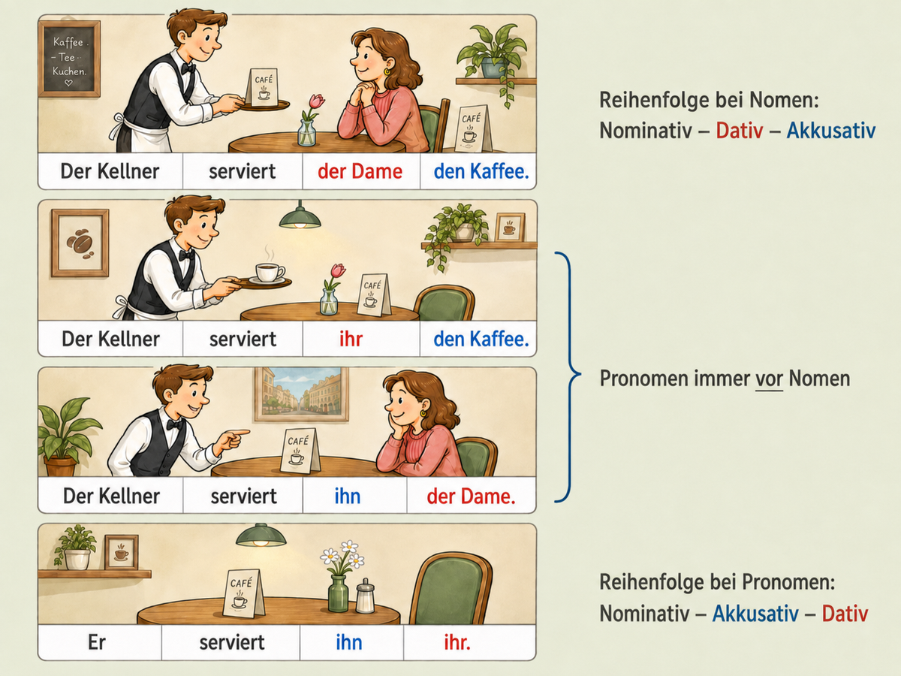
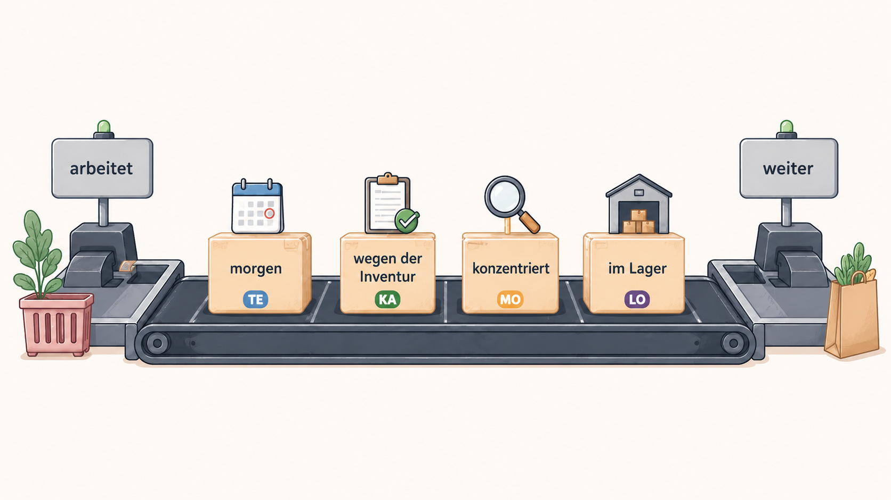

Richtwert: 20–30 Minuten · Einzelarbeit oder gemeinsames Training
Wem? Wen oder was?
Stehen Dativ- und Akkusativobjekt zusammen im Mittelfeld, wirken zwei Regeln: die Grundfolge bei zwei Nomen und die besondere Stellung von Pronomen.

Zwei Nomen: meist Dativ vor Akkusativ
Subjekt · Verb · Dativ · Akkusativ
Nora schickt dem Lieferanten die Bestellung.
Ein Pronomen: Pronomen vor Nomen
Nora schickt ihm die Bestellung. · Nora schickt sie dem Lieferanten.
Zwei Pronomen: Akkusativ vor Dativ
Subjekt · Verb · Akkusativpronomen · Dativpronomen
Nora schickt sie ihm.
Nomenfolge und Pronomenfolge sind nicht dasselbe
Zwei Nomen: meist Dativ vor Akkusativ. Pronomen: stehen früh; bei zwei Pronomen steht der Akkusativ vor dem Dativ.
Bei zwei Nomengruppen kann der Kontext die Reihenfolge verändern. Soll der Akkusativ ausdrücklich kontrastiert werden, kann er früher stehen: Nora schickt die Bestellung dem Lieferanten – nicht die Rechnung. Das ist eine Fokusvariante, nicht die neutrale Grundfolge.
Training: Objekte ordnen
Richtwert: 20–25 Minuten · Lesen, unterscheiden, begründen
Ergänzungen und Angaben
Jedes Verb bringt einen Bauplan mit. Es legt fest, welche Satzteile zu seiner Struktur gehören. Diese Satzteile heißen Ergänzungen. Weitere Informationen, die man frei hinzufügt, heißen Angaben.
Ergänzungen gehören zum Bauplan
Mit diesen Fragen finden Sie typische Ergänzungen:
Wer? – das Subjekt
Wen oder was? – das Akkusativobjekt
Wem? – das Dativobjekt
Worauf, worüber, womit …? – das Präpositionalobjekt
Beim Präpositionalobjekt gibt das Verb die Präposition fest vor: warten auf, sich freuen über, sich kümmern um.
Angaben wählt man selbst
Sie gehören nicht zum Bauplan des Verbs. Sie geben zusätzliche Informationen, zum Beispiel über Zeit, Grund, Art und Weise oder Ort. Genau solche Angaben ordnet TEKAMOLO.
Samira hilft heute. · Wir warten im Besprechungsraum.
Manche Ergänzungen kann man weglassen
„Zum Bauplan gehören“ heißt nicht „muss immer dastehen“. Manche Ergänzungen sind fakultativ.
Nora hilft. · Nora hilft ihrer Kollegin.
Beide Sätze sind vollständig. Das Dativobjekt bleibt trotzdem eine Ergänzung: Das Verb helfen legt den Dativ fest, sobald man sagt, wem geholfen wird.
Der Weglasstest ist deshalb nur ein erster Hinweis. Fragen Sie zusätzlich: Gehört dieser Satzteil zum Bauplan des Verbs – oder füge ich ihn als freie Information hinzu?
Gleiche Form, andere Funktion
| Satz | Funktion | Warum? |
|---|---|---|
| Nora legt die Akte auf den Tisch. | Direktivergänzung | legen verlangt ein Ziel. |
| Nora telefoniert am Tisch. | lokale Angabe | Der Ort ist frei hinzugefügt. |
| Wir warten auf die Freigabe. | Präpositionalergänzung | warten auf hat eine feste Präposition. |
| Wir warten seit Montag. | temporale Angabe | Die Zeitangabe ist nicht an warten gebunden. |
Nicht jede Präpositionalgruppe ist eine Präpositionalergänzung
auf die Freigabe warten enthält eine Präpositionalergänzung. auf dem Tisch arbeiten enthält eine lokale Angabe. die Akte auf den Tisch legen enthält eine Direktivergänzung.
Training: Ergänzung oder Angabe?
Richtwert: 20–30 Minuten · Satzbausteine ordnen
Was ist das Mittelfeld?
Im deutschen Aussagesatz steht das konjugierte Verb an zweiter Stelle. Gehört ein zweiter Verbteil dazu, steht er am Satzende. Die beiden Verbteile bilden zusammen die Satzklammer; der Bereich dazwischen heißt Mittelfeld.

Das Team arbeitet morgen wegen der Inventur konzentriert im Lager weiter.
grün = die beiden Verbteile · dazwischen liegt das Mittelfeld
Was steht am Satzende?
Die rechte Satzklammer kann unterschiedlich gefüllt sein:
Verbzusatz eines trennbaren Verbs: Das Team arbeitet morgen weiter. (weiterarbeiten)
Infinitiv: Das Team will morgen weiterarbeiten.
Partizip II: Das Team hat gestern weitergearbeitet.
Wichtig: weiter ist im ersten Satz keine Angabe. Es gehört zum Verb weiterarbeiten.
TEKAMOLO ordnet die Angaben
Liegen mehrere Angaben im Mittelfeld, folgen sie häufig dieser neutralen Grundfolge:
TE – KA – MO – LO
Wichtig: Das ist keine starre Regel und gilt nicht für den ganzen Satz. TEKAMOLO ordnet nur die Angaben untereinander. Objekte und Pronomen folgen eigenen Prinzipien.
So klingt der Satz oft, wenn nichts besonders hervorgehoben wird. Fokus, Kontext und Bekanntheit können die Reihenfolge verändern.
| Kürzel | Frage | Fachwort | Beispiel |
|---|---|---|---|
| TE | Wann? | Temporalangabe | morgen |
| KA | Warum? | Kausalangabe | wegen der Inventur |
| MO | Wie? | Modalangabe | konzentriert |
| LO | Wo? | Lokalangabe | im Lager |
Was gerade wichtig ist, kann nach vorn rücken
Vor dem konjugierten Verb liegt das Vorfeld. Eine Angabe kann dort stehen, wenn der Gesprächskontext sie stärker in den Fokus rückt. Vergleichen Sie dieselbe Information:
| Die Frage | Die Antwort |
|---|---|
| Wann? | Morgen arbeitet das Team wegen der Inventur konzentriert im Lager weiter. |
| Warum? | Wegen der Inventur arbeitet das Team morgen konzentriert im Lager weiter. |
| Wie? | Konzentriert arbeitet das Team morgen wegen der Inventur im Lager weiter. |
| Wo? | Im Lager arbeitet das Team morgen wegen der Inventur konzentriert weiter. |
Achten Sie darauf: Das konjugierte Verb bleibt in allen vier Sätzen an zweiter Stelle. Nur der Platz davor wechselt.
Training: Angaben ordnen
Richtwert: 25–35 Minuten · Gesamttraining und Sprechen
Mehrere Ordnungsprinzipien wirken zusammen
Für das ganze Mittelfeld gibt es keine starre Kette. Eine brauchbare neutrale Orientierung entsteht in mehreren Schritten:
1. Pronomen nach links
Bei zwei Pronomen steht der Akkusativ vor dem Dativ: sie ihm, es ihr.
2. Bekanntes eher vor Neuem
Was im Gespräch schon bekannt ist, steht häufig früher. Neue oder besonders schwere Satzteile stehen häufig später. Das ist eine Tendenz, keine starre Positionsregel: Dativobjekte mit Personen als Empfänger stehen auch als neue Information oft vor den Angaben.
3. Angaben untereinander häufig nach TEKAMOLO
Temporal, kausal, modal, lokal ist eine häufige neutrale Grundfolge der Angaben. Kontext und Fokus können sie verändern.
4. Feste und richtungsbezogene Ergänzungen oft spät
Präpositional- und Direktivergänzungen stehen häufig hinter den freien Angaben: seit Montag geduldig im Büro auf die Freigabe warten.
Training: das ganze Mittelfeld
Satzbau erklären statt nur raten
Person A nennt vier bis sechs Satzbausteine aus dem eigenen Arbeitsalltag. Person B bildet einen neutralen Satz und erklärt: Was ist Pronomen oder Ergänzung? Welche Angaben folgen TEKAMOLO? Danach wechseln Sie.
Notieren Sie drei Sätze aus Ihrem Betrieb oder Wunscharbeitsplatz. Markieren Sie anschließend, welches Ordnungsprinzip jeweils wichtig war.